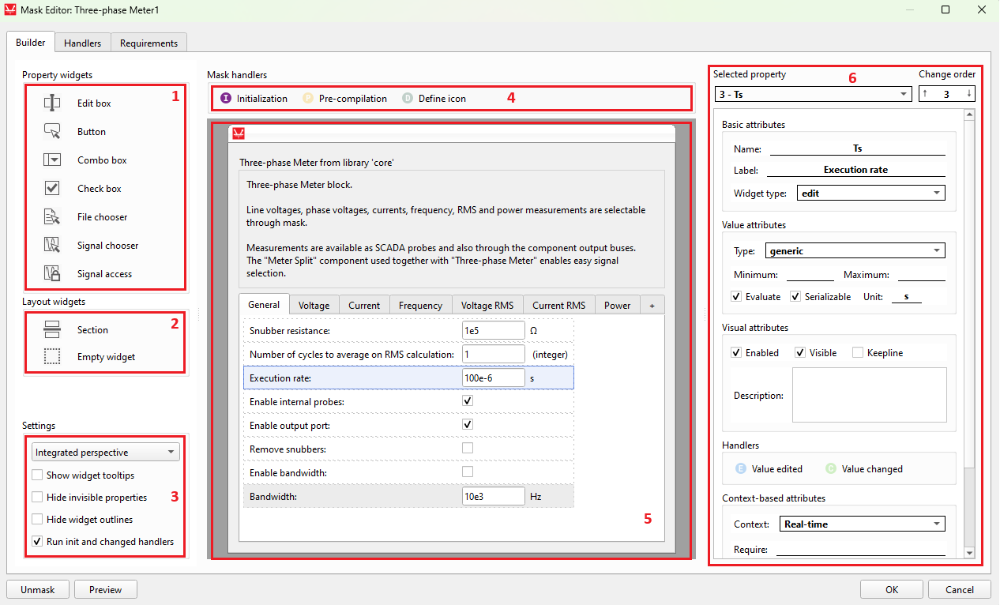
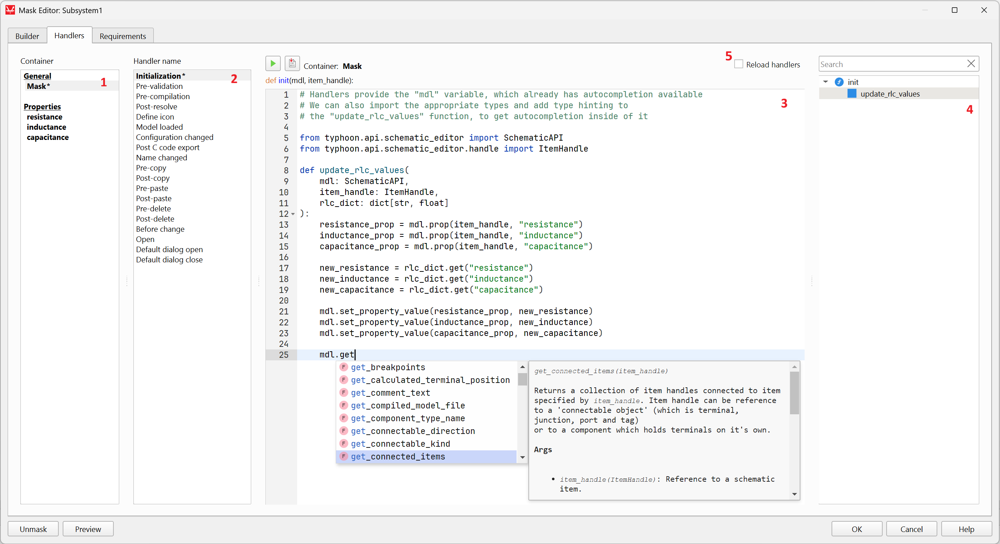
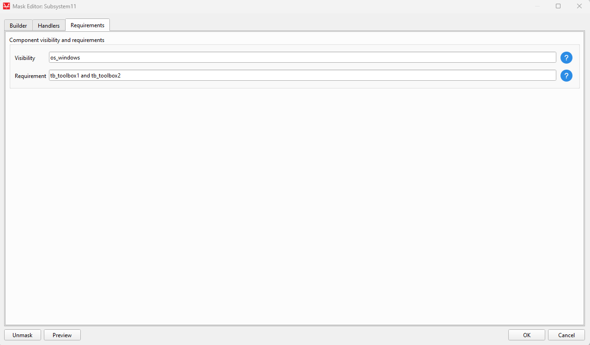

Mask
Description of component masks and their functionalities
Introduction to Component Masks
A component mask is an object that can be layered on a Subsystem component block, which allows for interacting with individual components within the subsystem. This is typically done by defining specific properties and handlers that correspond to components within the subsystem. By changing the values of mask properties and calling handlers defined on a component mask, the inner circuit diagram and component property values can be easily changed within the subsystem.
Functionally, component masks introduce a new subsystem-level namespace to Subsystem components. This means that new property values can be created on the mask which will become part of the subsystem namespace, and can be accessed by its internal components. Furthermore, Handlers can be used to manipulate the properties of the internal components.
Every Subsystem-based component in Schematic Editor can be masked. You can edit the mask of components by using the Mask Editor tool, depending on the component state:
- Locked - Masks cannot be opened or edited.
- Linked - Masks can be opened, but not edited.
- Unlinked - Masks can be opened and edited.
Mask Editor
A mask can be created by right-clicking a Subsystem-based component, navigating to the Mask submenu, and clicking on the Mask Editor action (or clicking the keyboard shortcut Ctrl + M). It is comprised of three tabs, each of which enables the definition of different features of the Mask. These tabs are:
- Builder tab - which defines the properties of the mask, and which widget type to use as an input in the Mask dialog;
- Handlers tab - which defines mask and property handlers;
- Requirements tab - which specifies requirements for the availability of the masked component, such as toolboxes.
Additionally, the Mask Editor includes two additional options at the bottom left of the window (see Figure 1):
- Unmask - deletes the mask and all its properties and handlers
- Preview - opens a window that displays the Mask dialog as it will appear to a user of the component (such as by double-clicking on the component).
Builder tab
The Builder tab is shown in Figure 1.

The numbered areas with a red border are as follows:
- Property widgets
- Layout widgets
- Settings
- Handler links - Shortcuts that automatically change the tabs and displays the specific clicked handler.
- Mask dialog area - The main interactive area of the editor, which acts both as a preview and mask building canvas.
- Property attributes
Property widgets
Property widgets define different methods for users of the component to input values on the component mask. They define properties that are included in the Subsystem namespace. The available property widgets are the following:
- Edit box
- Allows the mask user to enter any value for the property.
- With the Evaluate property attribute marked, the value string will be evaluated according to the selected Type attribute, serving as a validation of the input.
- Button
- A button that runs the button_clicked handler code when clicked.
- Combo box
- Allows the selection of one value among a predefined list that is set in the 'Combo values' attribute.
- Check box
- A box that generates a boolean value (True/False) according to its check status.
- File chooser
- A button that allows the mask user to select a target file. The expected file extensions are set in the File extensions box, and each entry must have the *.ext format. The starting folder for the dialog to choose the file is defined on the Default path widget attribute.
- Signal chooser
- Opens a dialog in which the mask user can select one signal among all the visible signals in the schematic.
- Signal access
- Controls the visibility for outside components of the signals in the
subsystem. Only one instance of the widget is allowed in the mask. Available options are:
- Public - does not apply any restriction;
- Protected - hides the signals;
- Inherited - applies the rules defined on the parent component.
- Controls the visibility for outside components of the signals in the
subsystem. Only one instance of the widget is allowed in the mask. Available options are:
Layout widgets
Layout widgets are user interface widgets that help with the organization of the mask dialog. They do not define properties in the namespace.
- Section
- A titled section used to organize Property widgets by defining a collapsible box around them.
- Consists of a pair of widgets that can only exist alone in a row and define the first and last property widget than will be encompassed by the section.
- Empty widget
- An empty widget that creates spacing by moving a Property widget one layout column to the right.
Settings
This area defines settings for the currently opened Mask Editor dialog.
- Perspective selection
- Update the Mask dialog area to the selected simulation perspective. The display is tied to the values defined in the Context-based property attribute group.
- Show widget tooltips
- Show the tooltips that appear when hovering over a Property widget on the mask dialog.
- Hide invisible widgets
- Hides invisible widgets in the builder. Turn this setting off before adding or moving widgets to make sure the final widget positions are as expected.
- Hide widget outlines
- Hides the outlines that indicate widget bounds.
- Run init and changed handlers
- If checked, the Mask initialization handler and the Property value changed handlers will run when OK is clicked in the editor. This imitates the behavior when adding a component from Library Explorer.
Handler links
Handler links are quick shortcuts to display the most commonly used handlers. At the top of the Builder tab, you can find links to the Initialization, Pre-compilation, and Define icon handlers. You can also find Property handler links in the Property attributes panel, or by right-clicking on a property in the Mask dialog area.
Mask dialog area
The Mask dialog area is the main canvas for the mask building. The process is very interactive: you can drag and drop Property widgets and Layout widgets to it, move already placed widgets, move them to different tabs or move the tabs themselves to change the order, etc. The effect of changes made in the Property attributes panel that affect the display of the property is also immediately observed in the Mask dialog area. The text of property labels, units, and tab names can be edited inline by double-clicking on them. Operations can be easily undone (Ctrl + Z) and redone (Ctrl + Y).
Property attributes
The available Property attributes are the following:
- Selected property
- Shows the currently selected property widget and allows the selection of a new one.
- Change order
- Displays and allows changing the position of the property in the property list. This affects the position of the widget in the group tab it belongs to.
- Basic Attributes
- Name
- The identifier of the property, which will be accessible to inner subsystem components.
- Label
- The text cue in the component dialog that describes the property.
- Widget type
- The widget type that serves as the property value input method.
- Name
- Value attributes
- Type
- The value type that the mask user is expected to input.
- Minimum
- The minimum accepted value for a numerical type property.
- Maximum
- The maximum accepted value for a numerical type property.
- Evaluate
- If checked, the text input of the Edit widget is evaluated according to the selected value type. If unchecked, the value is the entered string.
- Serializable
- If checked, the property will be included in the serialized JSON model. Otherwise, it will be skipped during the serialization process.
- Unit
- A label with the unit for the property. Has no effect on compilation.
- Type
- Visual attributes
- Enabled
- Uncheck this box to prevent the mask user from interacting with the property widget.
- Visible
- Uncheck this box to hide the widget in the mask dialog layout.
- Keepline
- Check this box to relocate the property widget to the same row as the previous widget in the group tab layout.
- Description
- A description for the property. It is displayed in the tooltip when hovering the property widget in the mask dialog.
- Enabled
- Context-based attributes
- Context
- Choose the context (Real-time or TyphoonSim) the attributes in this group refer to. See Simulation context definitions for more information.
- Require
- Defines which conditions must be met for the property to be available in the selected context
- To require a specific toolbox, for example, type tb_toolboxname. Several requirements can be combined using the and logical operator, as in tb_toolboxname and tb_othertoolboxname.
- Nonsupported
- Check this to indicate that the property is not supported in the selected context.
- Any value other than the default or one of the allowed values results in compilation failure.
- Nonvisible
- Check this to hide the property in the selected context.
- Ignored
- If this box is checked for the selected context, the property and its value will be ignored during the compilation process.
- Allowed values
- A set of values that allows an unsupported property to pass compilation.
- Context
- Widget-specific attributes
- Button text (Button)
- The text that appears inside the button. Saved as the property's default value.
- Combo values (Combo box)
- The list of values that must appear as options of the combo box, one per line.
- File extensions (File chooser)
- The file extensions accepted on the File chooser dialog.
- Each extension must be added in a new line and must have the *.ext format.
- Default path (File chooser)
- The starting folder when choosing a file. The displayed path is relative to the model file folder.
- Button text (Button)
Handlers tab
The Handlers tab is shown in Figure 2.

Here is description of the numbered areas:
- Container list
- Left-click a container (one of the Properties or the Mask) to display its handlers. You can drag and drop a property entry of the list into the Code Editor to quickly add a property handle getter code snippet. With a right-click other code snippet options are shown, as well as a quick link to the property in the Builder tab.
- Handler name list
- Displays the list of available handlers for the selected container (See Mask handlers and Property handlers). Select one of the handlers to display its code in the Code Editor.
-
Code Editor
- Write the code of the handler in this text area. You can drag and drop items into the Code Editor from either the Container list or the Code namespace outline tree.
-
Code namespace outline tree
- This tree shows variables and functions that are defined in the current handler code, and can be clicked on to jump to their line. For the case of Property handlers, functions defined in the Initialization handler are also displayed. Function names in the tree can be dragged to the Code Editor to insert a function call code snippet with the expected parameters.
-
Reload handlers
- When editing the mask of a component of a library file (.tlib), a checkbox called
Reload handlers appears. If this option is selected when mask
changes are accepted, handler modifications are applied immediately to existing model
instances of the component, without the need to reload the entire library.
Important: After updating the mask initialization handler, run it by creating a new component instance. This will apply the changes to existing components.Note: You must use importlib.reload(module_name) to update an external module imported by the handler.
- When editing the mask of a component of a library file (.tlib), a checkbox called
Reload handlers appears. If this option is selected when mask
changes are accepted, handler modifications are applied immediately to existing model
instances of the component, without the need to reload the entire library.
Requirements tab
The requirements are a set of conditions that if evaluated to False will affect either the component's visibility in Library Explorer, or the ability to compile a model with it. Requirements can be combined with the 'and' logical operator, as shown in Figure 3.
